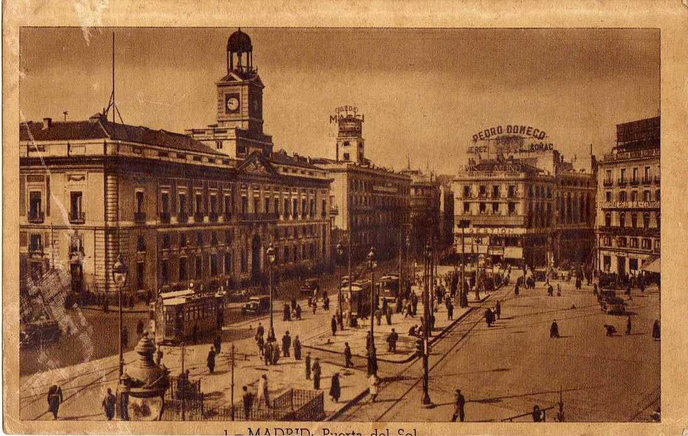
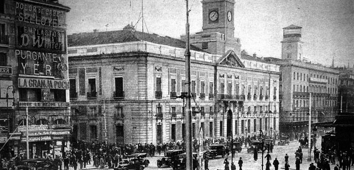
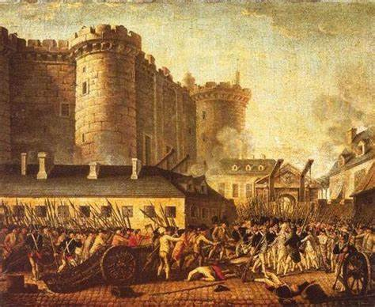
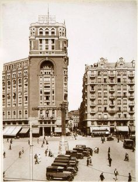
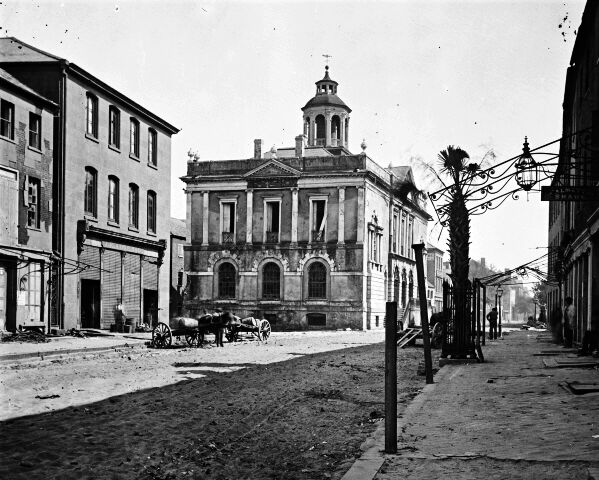

Madrid je za evropske odnose mlada metropola. U periodu od 852. do 886. godine podignuto je mavarsko utvrđenje (alkasar) na mestu današnje madridske kraljevske palate. Utvrđeno mesto bilo je nazvano Magerit, a od 939. Madšrit i od 1038. Madrid. Gradske zidine iz perioda arapske vladavine održale su se do danas. 1309. održan je prvi sastanak Kastiljanskog gradskog parlamenta na čelu sa Fernandom IV. Zasedanjem parlamenta 1561, kao i zasedanjem 1588. uprave iz nedaleko smeštenog Toleda na čelu sa Felipeom II počeo je uspon grada. Izuzev manjeg prekida u periodu od 1601. do 1606, Madrid je zvanično bio glavni grad Španije, što je i danas. Deo Madrida koga su podigli španski Habzburgovci i danas se zove austrijski Madrid. U ovom periodu sagrađeni su Puerta del Sol, Deskalzas Reales, Palasio de Useda, Plasa de la Vilja i znamenito delo habzburške arhitekture Plasa Major kao i katedrala San Isidro.
Između 1701. i 1713. godine Španija je bila u ratu, a 1706. usledila je engleska i portugalska vladavina. Od 1808. do 1813. Madrid je bio u francuskom posedu i tada je kralj bio Žozef Bonaparta, stariji Napoleonov brat. Naravno da Žozef i njegova žena Žili nisu bili prihvaćeni tako da zapravo ni nisu bili pravi vladari. Ustanci zbog njihove navodne vladavine počeli su da se dižu od 2. maja 1808. godine. Ovi osvajači ili, bolje reći prolaznici, su srušili manastir i celu jednu gradsku četvrt, kako bi napravili trg.
Od 1833. do 1876. godine bio je još jedan rat, a pritom je besnela i epidemija kolere. 1873. godine proglašena je prva republika pod diktatorom Emilijom Katelarom, a 1923. usledila je vojna diktatura pod generalom Migelom Primom de Ribejrom. U Madridu je 14. aprila 1931. proglašena Druga Republika. U Španskom građanskom ratu vođenom od 1936. do 1939. godine, do 28. marta Madrid je pretrpeo velika razaranja italijanskim i nemačkim bombardovanjem. Posle rata diktatura Fransiska Franka sprovodila se do 1975. Povodom toga od 1965. do 1973. održavani su stalni štrajkovi i protesti studenata. Nakon Frankove smrti 1975. godine kralj Huan Karlos I sproveo je demokratizaciju. Godine 2004. je bio meta islamskih terorista i tada je poginulo 192 ljudi.
  